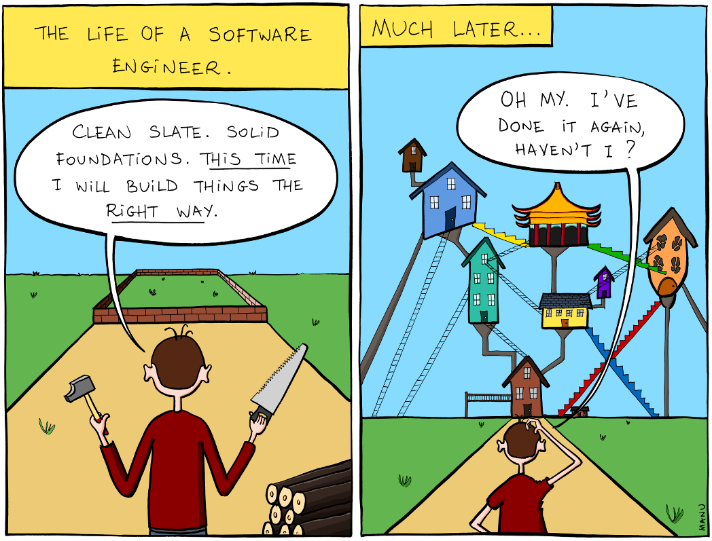
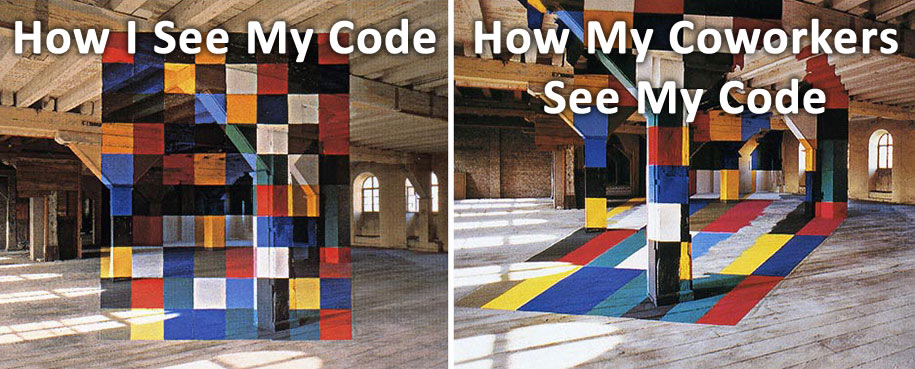
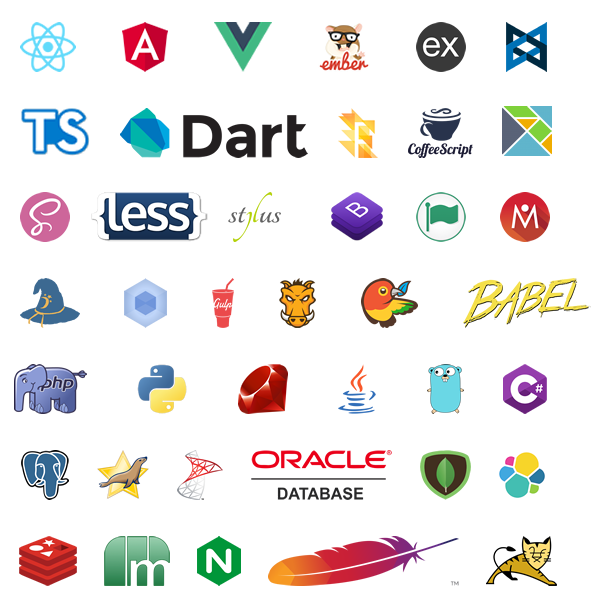

DevOps: Infrastructure as Code
Hello, my name's Dave Lafferty. I've been working at Nazareth College as a Senior Web Developer for a little over 5 years, and I write beautiful, elegent code.

All the time, every time.

If you don't believe me, ask my coworkers.
complexity is inevitable
Software development is messy, it's full of unknowns and compromises, and we tend to downplay how difficult it is to switch between teams or projects because admitting that your code or codebase is confusing carries the subtext that you're a bad developer, or worse: incompetent. But proficiency takes time. Anecdotally, many software firms expect a developer to feel comfortable
developer tenure
6 months
comfortable
1 year
proficient
3 years
moved on (average)
- six months after hire, and proficient, really up to speed after
- one year
This is a staggering amount of time, you basically don't know how productive someone will be until a year after you've hired them. And during that time, you want developers to be learning the business, not struggling with technology.
And then the kicker, is that average employee tenure in IT is only
- about three years.
module-driven development
repository
new packages/day
Rubygems.org
27
PyPI
75
Maven Central
80
Packagist
119
npm
470
But the current trend is to increase and abstract complexity, and farm out functionality to third-party plugins. And to focus on what really differentiates you. To place some context around this claim:
- modulecounts.com gives statistics on how many packages per day are added to popular package repositories, here are some numbers from September this year for popular web languages:
* go over numbers
Can anyone guess what npm is at?
- modulecounts.com tracks 470 new packages per day.
I don't know if I've made 470 distinct modules in my lifetime, and npm is growing at that number daily! And this is reflective of the culture. Modern websites are bundles of plugins, modules and frameworks with integrations written between them. We abstract away as much as we can and because of the open source movement and these packaging platforms, we can share those abstractions with other people.

What do you feel when you see this list?
...excitement?
...exasperation?
...dread?
All three simultaneously?
The growth and availability of web technology is polarizing, and while I think it's important to be skeptical and cautious when adopting new technology or ideologies, we can't be curmudgeons, this is the present and future of web development. We need to be objective and reject or accept something on its merits.
But if we accept that some of this technology is useful, we have to find ways to manage the ever-growing complexity of our websites. We have to realize that software is not intuitive by default, and we have to be willing to adapt our processes and learn new paradigms, but also be thoughtful about integration, code sharing, and deployment.
better living through devops
So my goal over the rest of this speech is to give you the tools to evaluate and use new technology through the application of DevOps, specifically within a small team.
ownership of entire application
expectation of consistency
removal manual processes
DevOps has a lot of hidden depth, it's easy to understand at a glance but really adopting it permeates all aspects of your development workflow.
DevOps is taking ownership of your entire application, from development to deployment and monitoring. It's never saying the phrase "it works on my machine." It's aggressively removing manual processes, because manual processes introduce error and compartmentalize knowledge.
This is a big topic, and we at Nazareth are a small team. When I have too much decision and choice I tend to get decision paralysis. So I've made a goal and I apply it to all aspects of my workflow.
sharing is caring
My test is: am I making my application more shareable? Shareability means other people can work on my code and contribute to it with low friction. This has a trickle-down effect, and makes other aspects of deployment simpler. But with this test, I can evaluate whether a new framework or technology is a good fit, and I can adjust the technology if it has other aspects I want but impacts shareability.
So at Nazareth, the question is no longer "should we use React," but "is our UI solution (or lack of solution) affecting shareability?" If the answer is yes, then we need to evaluate our UI library, and use DevOps to ensure our project is shareable.
Before I talk about implementation, though, I want to go over shareability, and what I mean. There's a big trend to try to make things obvious and intuitive, and I think that's sort of a red herring. All digital interactions are learned and imitated. We're not born with the pinch to zoom reflex, we learned it once and now every touch device has to use it to be successful.
[http://www.ign.com/articles/2006/02/22/top-10-tuesday-worst-game-controllers]
Another example is game controllers. This is an alternate controller for the super nintendo. It boasted a better D-PAD for your thumb so you'd get less muscle fatigue and turbo toggles for the buttons. It was ranked as the ninth worst video game controller by IGN in 2006. But it isn't inherently worse, it's just different and gamers had become used to the weight, fit and feel of the licensed gamepads. They had learned familiarity and this gamepad violated too many of the ingrained habits gamers had developed. It's not that a d-pad and buttons are the most intuitive way to interact with a game.
familiarity, not intuitiveness
applications feel similar
abstract away details
script complete environments
So to make our code more shareable within our team, we focus on making projects feel familiar, regardless of the technologies used. Developers should be able to move between projects with low friction because we've been thoughtful and intentional about how we build and package our application. We do that by identifying common tasks and scripting them. Starting a development server, creating and applying data migrations, importing test data, running unit tests, generating documentation, creating package distributions, etc... should be one script, not a series of documented or memorized commands. The real magic, though, is setting up all the dependencies necessary to run those scripts.
configuration management
There are two mainstream approaches to managing dependencies automatically, one is configuration management through tools like Ansible, Puppet, and Chef to converge a system to a desired state. This methodology reaches out to machines and adjusts them based on a desired state, I wish I had more time in this talk to go over this methodology more in-depth, but we honestly don't use configuration management tools very much except for initial configuration, to bootstrap VMs.
containerization/embedding
The other methodology is to embed all your dependencies alongside your application. Desktop apps have been doing this for decades This is the containerization philosophy, and we do this at Nazareth through Docker. For example, your website becomes one stateless binary-like package that embeds PHP, an application server, dependencies like openssl/curl/libxml, and any helper scripts. You then completely replace your application and dependencies each time you deploy, since everything is wrapped up in one package.
Intro to Docker
# Base image, contains very few utilities
FROM busybox
# Add files
ADD scripts /scripts
# Set the script that gets called when this image is run
ENTRYPOINT [ "/scripts/choo-choo" ]
So we recognized that this is the way we want to build applications, and the technology we use to accomplish this is Docker. To follow best practices, Docker requires you to embed almost everything, to think about every dependency your site uses, and to write scripts to embed those dependencies.
This image is now a standalone environment. It can be called by its tag and nobody has to know the implementation details of the script. It can also be compressed and sent to another developer and they can output the exact same train as you.
embedding components
FROM ubuntu:16.04
RUN apt-get update && \
apt-get install -y \
sudo php7.0 php7.0-zip php7.0-mbstring php7.0-dom
ADD opt /opt
RUN php7.0 /opt/composer-installer.php \
--install-dir=bin \
--filename=composer
ADD usr /usr
ENTRYPOINT [ "/usr/local/bin/entrypoint" ]
EXPOSE 8080
This image is now a standalone component. You can use it to run PHP7 websites or scripts with community or custom extensions already installed. A frontend developer doesn't have to worry about setting up their own environment and can focus on what's important to them. This example works easily as well for something like Webpack. You can set up a Webpack images with common elements like a TypeScript or SASS loader.
embedding entire environments
Now that we've looked at the basics of Docker, I want to share how Nazareth uses it. We don't Dockerize individual components, we Dockerize entire logical applications and their build and development environments. We have sort of replaced virtual machines with containers. Having complete control over the environment means that I can easily make common interfaces to my containers that produce similar results but do very different things. I can then compose those systems and make assumptions about how they work because of those standard interfaces.
embedded interfaces
build.xml
config/config.yml
docker
orchestration/deploy
tests/
run-tests
last-results.xml
workspace/
dev/
start-development
migrate
entrypoint
This is a layout of some of the common features all of our new projects have. We use ant to run custom steps like building distribution packages and generating code. Our config folder holds environment-specific information, like certificates, passwords and settings. This is passed in at runtime. The docker folder has environments for production and development machines. Orchestration has all the information necessary to build and deploy versions of the application except for things like repository passwords. Tests is a common way to run the project's test suite. Inside workspace are development tools to start up the environments necessary to modify the code, and the entrypoint supports common arguments like "start," which starts services necessary for the application.
Notice there's no mention of the application, nowhere does it say "start nginx" or "compile assets". Every project has these folders, but all projects have the freedom to define their own functionality.
composability through familiarity
simplified deployment
deploy scripts
deploy media
adjust permissions
migrate/seed data
adjust webserver configs
restart/reload service
deploy scripts
deploy media
adjust permissions
migrate/seed data
adjust webserver configs
restart/reload service
deploy versioned image
restart container
Similar to the development side, we benefit from the consistency of the Docker platform. All of our custom containers take a configuration file and custom Docker settings, like memory constraints, file mounts, port mappings, etc... But after the initial configuration, deployments are atomic and involve only updating the image. At Nazareth we use Kubernetes, which manages scheduling containers to a cluster of servers and automatically scaling out services by creating additional instances, but it's just as effective to start Docker containers through scripts manually as well.